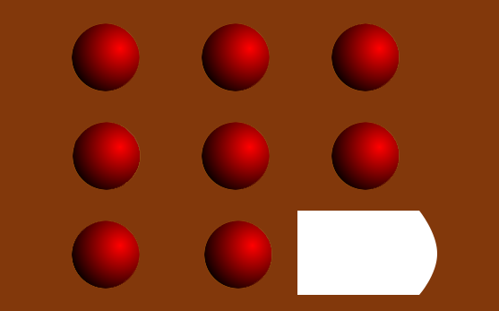

Den korrekte udregning af din IQ forudsætter at det er første gang du prøver testen.
Den beregnede IQ skal kun betragtes som vejledende. Testen giver således ikke adgang til Mensa selvom IQ'en er blandt de øverst 2%.
Testen er valideret på aldersgruppen 18-30 år. Udenfor denne aldersgruppe skal den beregnede IQ øges en smule.
De korrekte svar på opgaverne offentliggøres ikke, og det er ikke tilladt at offentliggøre løsningerne på nettet.
Din IQ er beregnet til at være: Ikke beregnet
Beregnet ved brug af spredning 15
En IQ mellem 85 og 115 ved spredning 15 ligger indenfor det man kalder normalområdet. For at blive medlem af Mensa skal man ved denne spredning have en IQ på 131 eller derover.
Har du lyst at prøve den officielle test=